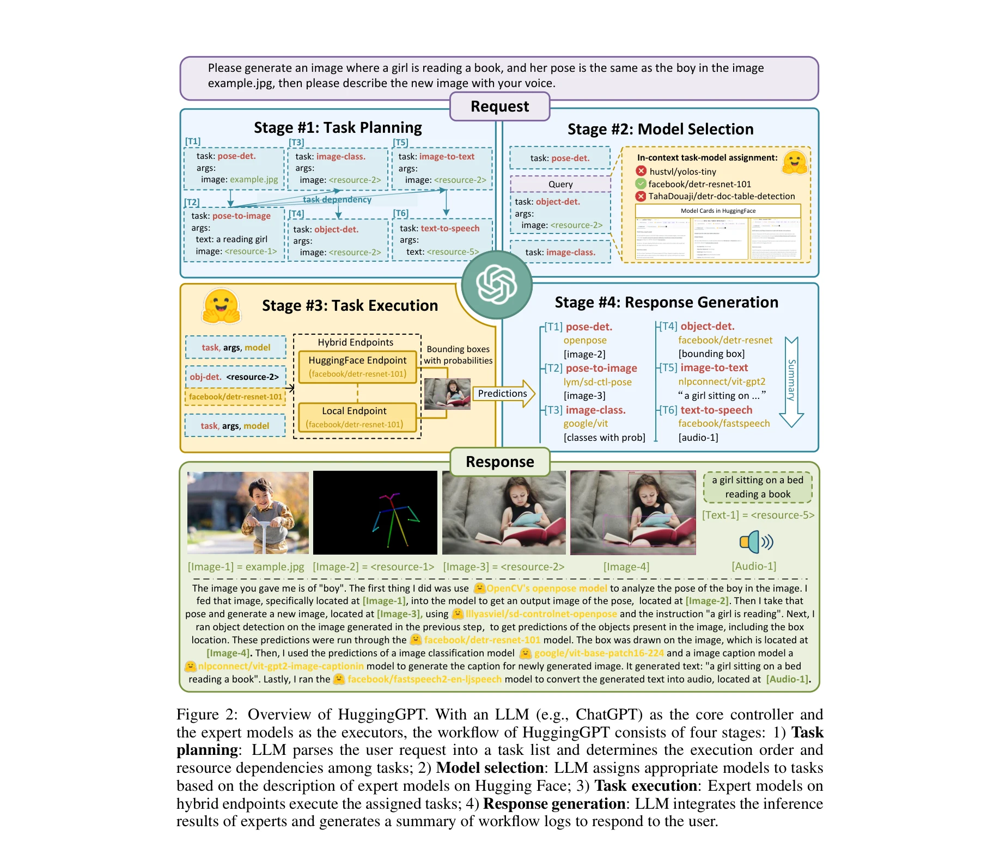

Figure 1: Language serves as an interface for LLMs (e.g., ChatGPT) to connect numerous AI models
HuggingGPT는 ChatGPT를 컨트롤러로 활용하여 Hugging Face의 다양한 AI 모델들을 자동으로 선택하고 조율함으로써 복잡한 멀티모달 AI 작업을 해결하는 LLM 기반 에이전트이다.
Motivation
Known: LLM은 언어 이해, 생성, 추론에서 우수한 능력을 보이지만 비전, 음성 등 다양한 모달리티를 처리할 수 없고, 복잡한 다중 태스크 조율도 어렵다.
Gap: LLM과 domain-specific 전문 모델들 사이의 연결 고리가 부재하며, 이들을 효과적으로 통합하기 위한 일반적인 인터페이스가 없다.
Why: Language를 generic interface로 활용하여 LLM이 다양한 modality와 domain의 복잡한 작업을 자동으로 계획하고 실행할 수 있게 함으로써 AGI 구현에 한 발 더 나아갈 수 있다.
Approach: ChatGPT가 사용자 요청을 분석하여 task planning, model selection, task execution, response generation의 4단계를 거쳐 Hugging Face의 model description을 기반으로 적절한 모델을 선택하고 실행한다.
Achievement

Figure 2: Overview of HuggingGPT. With an LLM (e.g., ChatGPT) as the core controller and
멀티모달 작업 처리: 이미지, 텍스트, 음성 등 다양한 modality를 포함한 복잡한 AI 작업을 자동으로 해결
LLM-expert model 협력: LLM을 뇌로, task-specific 모델을 실행자로 하는 새로운 협력 프로토콜 제시
확장성: Hugging Face hub의 새로운 모델이 추가되면 자동으로 활용 가능하여 AI 능력의 지속적 성장 가능
자동 계획 및 실행: 사용자 요청만으로 task dependencies를 자동 인식하고 실행 순서 결정
How
Figure 2: Overview of HuggingGPT. With an LLM (e.g., ChatGPT) as the core controller and
ChatGPT를 통한 task planning: 사용자 요청을 분석하여 하위 작업 목록으로 분해하고 실행 순서 결정
Model selection: Hugging Face의 model cards에서 함수 설명(function descriptions)을 기반으로 각 task에 맞는 최적 모델 선택
Task execution: 선택된 모델을 HuggingFace endpoint 또는 local endpoint에서 실행하고 결과 수집
Response generation: 모든 모델의 예측 결과를 통합하여 사용자에게 최종 응답 생성
In-context learning: task-model-args 쌍을 prompt에 포함시켜 ChatGPT의 선택 정확도 향상
Originality
Language를 LLM과 AI 모델 간의 일반적 인터페이스로 활용한 novel한 개념 제시
기존 Hugging Face hub의 model descriptions을 직접 활용하여 prompt engineering 비용 절감
Task dependencies와 실행 순서를 LLM이 자동으로 결정하는 지능형 scheduling 메커니즘
Hybrid endpoints(클라우드 + 로컬) 지원으로 실용적 배포 가능성 증대
Limitation & Further Study
ChatGPT의 context window 제한으로 많은 수의 model descriptions을 동시에 처리하기 어려울 수 있음
LLM의 task planning 정확도가 완전하지 않아 잘못된 task 분해 가능성 존재
Model selection 시 모델 성능 메타데이터가 부족하면 부최적의 선택 가능
각 task-specific 모델의 실행 시간과 비용에 대한 최적화 고려 부족
후속 연구로 더 강력한 LLM 활용, 동적 model description 업데이트, 실행 결과 피드백을 통한 지속적 개선 필요